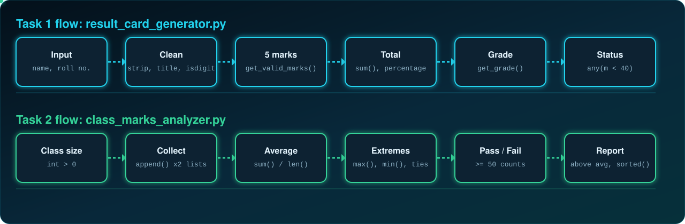

Program flow
Both programs are independent. Each one validates input first, then calculates, then prints a clear report.

ER diagram
How the data in each task relates. This is a conceptual model; the programs use Python variables and lists.

Task 1: Student Result Card Generator
Collects a name, roll number and five marks, then prints total, percentage, grade and Pass/Fail status.


Sample output
========================================
STUDENT RESULT CARD
========================================
Student Name : Ali Khan
Roll Number : 1025
----------------------------------------
Total Marks : 450 / 500
Percentage : 90.00%
Letter Grade : A+
Final Status : Pass
========================================Task 2: Class Marks Analyzer
Collects names and marks into two lists, then reports average, extremes, pass/fail counts, above-average students and sorted marks.

Sample output
Total Students : 4 Class Average : 72.50 Highest Marks : 95 (Sara) Lowest Marks : 45 (Ahmed) Passing Students : 3 Failing Students : 1 Above average: Sara: 95 Sorted: 95, 80, 70, 45
Run it
python result_card_generator.py python class_marks_analyzer.py